- 계정등록 방법
1. 우선 계정을 등록합니다.
이때 회원가입한 아이디와 일치하는 메일주소로 하셔야 합니다. 메일주소를 확인하기 때문입니다.
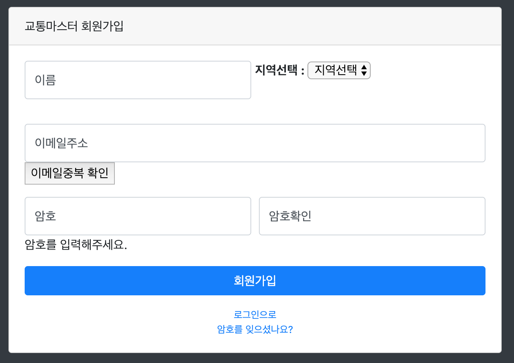2. 등록후 내 교통정보 등록 & 수정 메뉴를 갑니다.
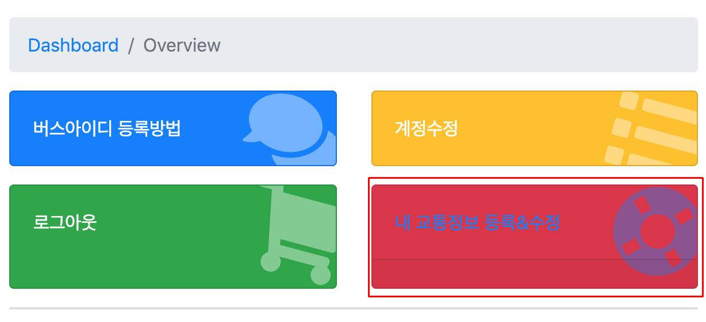3. 그러면 다음과 같은 화면이 뜹니다.
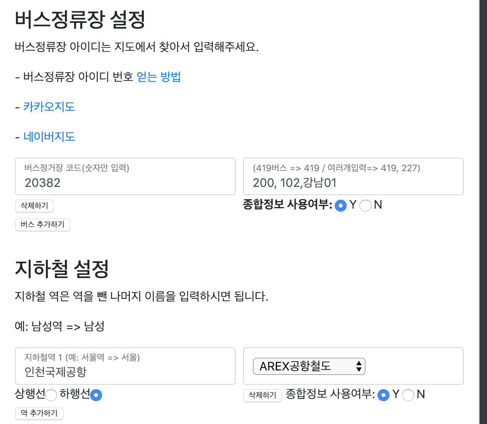이 설정페이지에서 버스, 지하철역 이름, 좌표등 입력하시면 됩니다.
좌표는 꼭 집으로 하실 필요가 없습니다. 근처로 하셔도 됩니다.
- 버스아이디 등록 방법
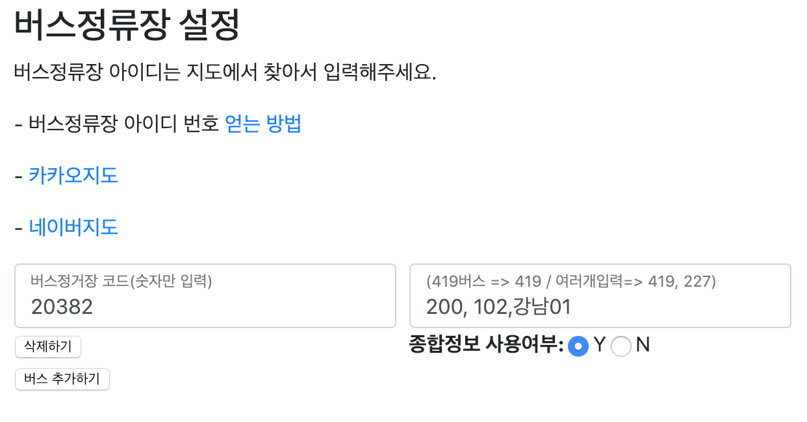버스아이디 찾는 방법은 다음설명을 참조하시면 됩니다.
버스는 다음과 같이 여러개를 쉼표를 써서 입력할 수 있습니다.
* 현재 서울권역의 버스만 지원하고 있습니다.
- 지하철 역 등록 방법
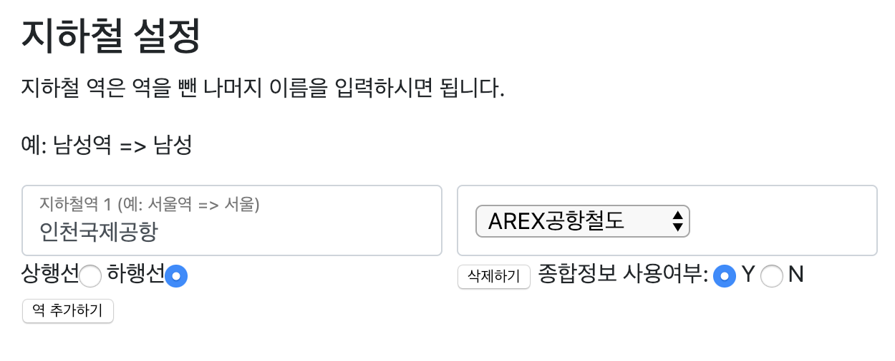지하철 역명을 입력하면 됩니다.
입력후 호선과 상행선, 하행선을 입력해주세요.
* 현재 시간표는 수도권 전역, 부산을 지원하고 있습니다.
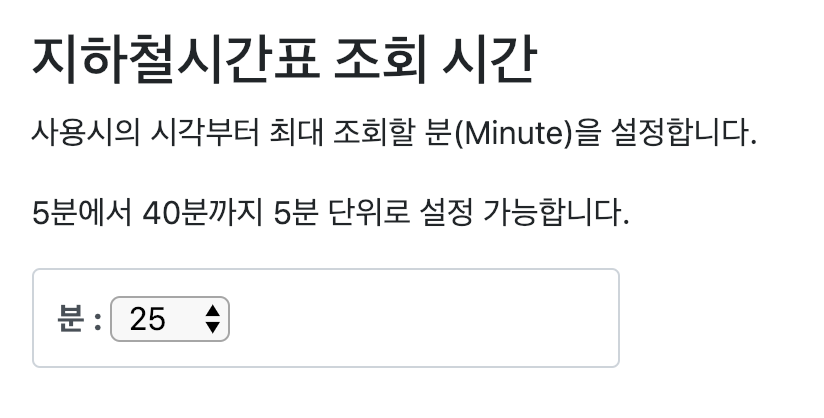시간표 조회 기능시 조회할 최대 타임입니다.
5분부터 40분까지 설정 할수 있습니다.
- 교통정보 등록 방법
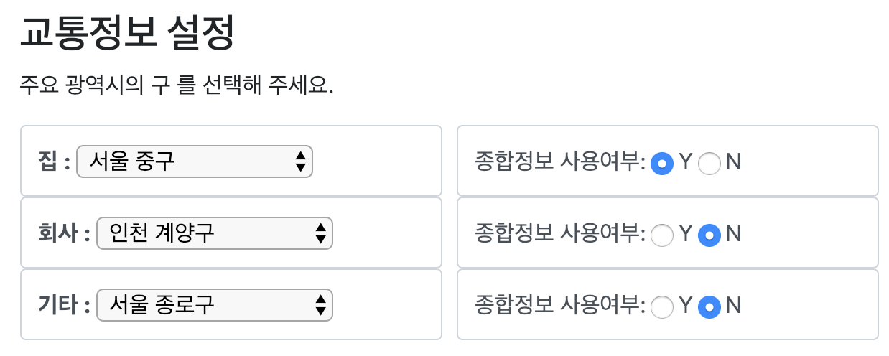카테고리에서 선택을 하시면 됩니다.
* 주요 광역시의 구 이름을 지원하고 있습니다.
- 주유소 등록 방법
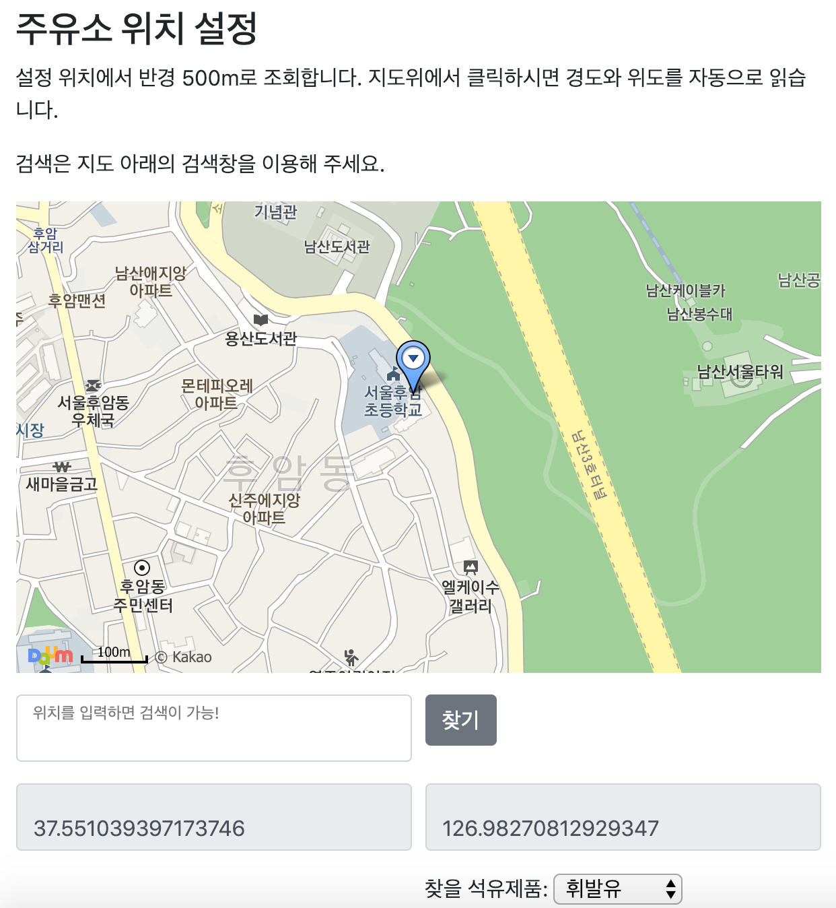위치는 맵에서 검색후 좌표를 찍으시면 자동으로 입력이 됩니다.
설정시 찾을 석유제품을 카테고리에서 설정해 주세요. [휘발유, 경유, 가스, 고급휘발유, 등유]
개인의 보안을 위해서 꼭 집으로 등록하실 필요는 없습니다.
마지막으로 계정연동은 NUGU 앱에서 합니다. 앱에서 왼편 메뉴열기를 한후 nugu play를 보면 앱이 있습니다.
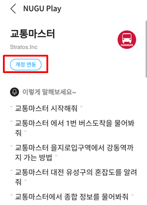앱을 클릭하면 설명과 함께 연결하기 메뉴가 있습니다. 클릭합니다.
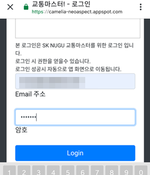그러면 로그인 창이 뜨는데, 아까 가입했던 아이디와 암호로 로그인을 합니다.
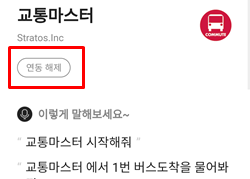정상적인 로그인일 경우 계정연동이 되며 회색으로 변합니다.
주요기능
- '7호선' '남성역'의 '상행선' 시간표를 알려줘 : 시간표 조회로 현재 시간 기준으로 7호선, 30분 안에 도착할 시간표를 알려드립니다.(서울, 인천 부산만 가능)
- '5호선' '강동역'의 '방화행' 실시간 도착정보를 알려줘 : 실시간 도착 역을 알려드립니다.(서울권만 가능)
- '부산 진구'의 최저가 주유소를 알려줘 : 주요 광역시의 구 위치 반경 900m의 최저가 주유소를 알려드립니다.
- '대전 유성구'의 혼잡도를 알려줘 : 주요 광역시의 구 위치의 평균 혼잡도를 알려드립니다.
- '광주'의 날씨는 어때 : 1개의 특별시, 6개의 광역시, 8개의 도의 날씨 온도 그리고 미세먼지 지수를 알려드립니다.
- '을지로입구역'에서 '강동역'까지 가는 방법을 알려줘 : 걸리는 시간, 역 갯수, 환승역을 알려 드립니다. (수도권만 가능)
계정 연동을 하시면 아래 개인화 기능이 가능합니다.
- 나의 최저가 주유소 알려줘 : 최저가 주유소 정보를 알려드립니다.
- 최저가 주유소를 이메일로 보내줘 : 최저가 주유소 위치를 등록한 계정 이메일로 보내드립니다.
- '1번' 버스 도착을 알려줘 : 등록한 버스정류장의 정보를 알려드립니다.(서울권만 가능)
- '2번' 역을 물어봐줘 : 등록하신 1번~10번의 역을 지정하신 시간 내에서 시간표와 비교하여 알려드립니다.(서울, 인천 및 수도권 지하철, 부산만 가능)
- '3번' 지하철 실시간 도착정보를 알려줘 : 등록하신 1번~10번의 실시간 도착 정보를 알려드립니다.(서울권만 가능)
- 종합 정보를 알려줘 : 설정하신 활성화한 버스역, 지하철역의 시간표, 그리고 지역의 교통정보를 한거번에 알려드립니다.
* 개발자 문의 : Dev.LunaStratos@gmail.com